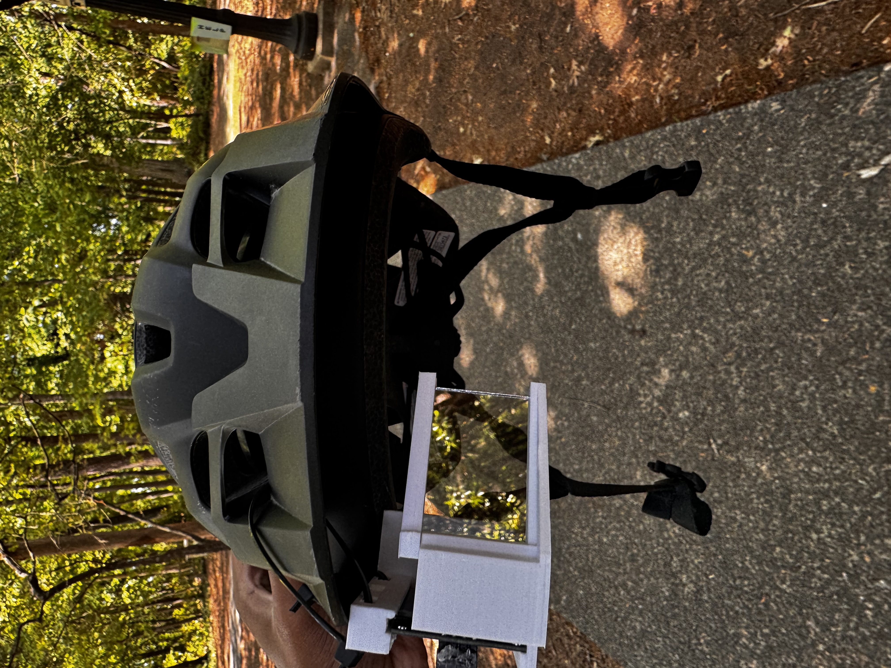
Displaying directions and other driving stats in a car is pretty common these days, whether that's in the form of phone holders or integrated displays made by the manufacturer. It's less common to see this done on bikes in a way that isn't obstructive and doesn't interfere with normal riding. Thus, we wanted to make a heads-up display integrated into a helmet for directions and other riding stats.
Want the display to feature maps with routing, time, speed, and other helpful stats for the rider.
The device shall not obstruct the user's riding experience in any way, and will keep a low profile.
Device should be easy to 'plug-and-play' (as shown in the demo at the end of this page)
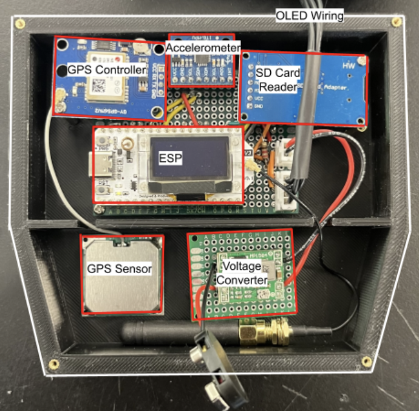
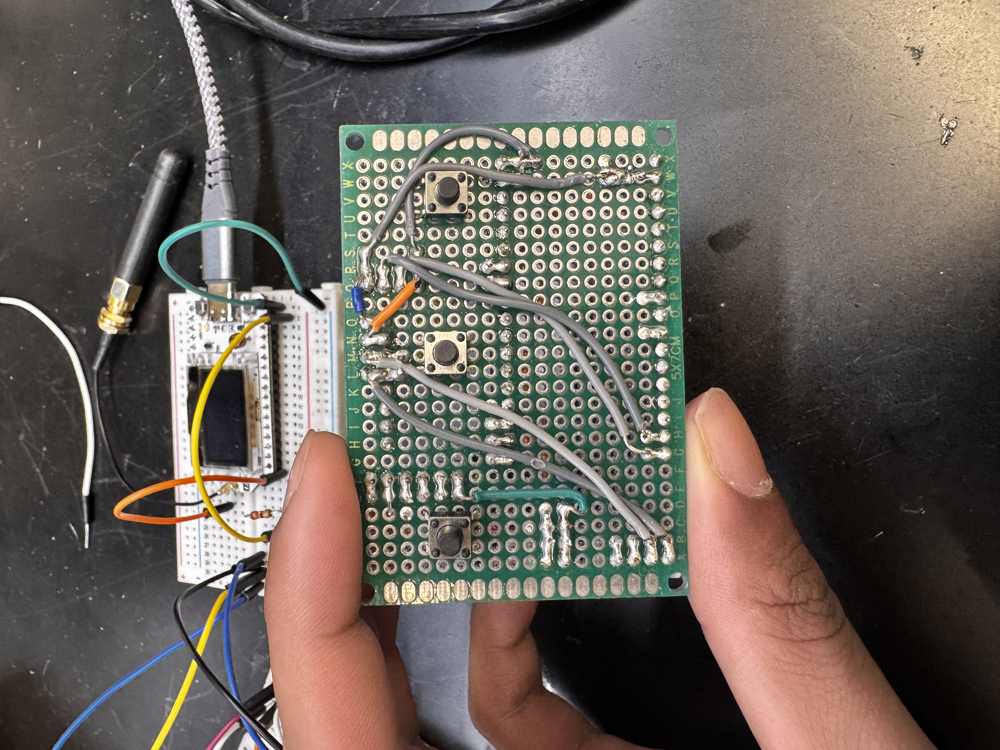
The device itself operates based on 4 main components:
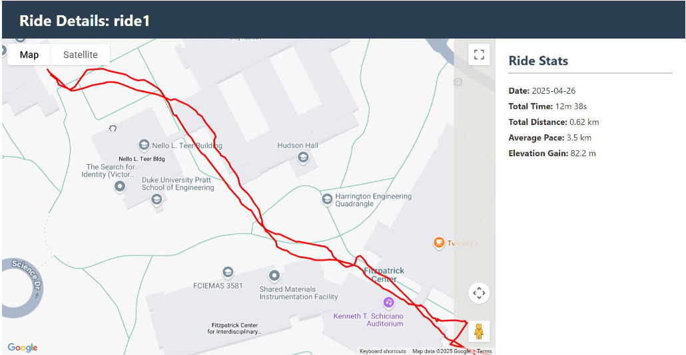
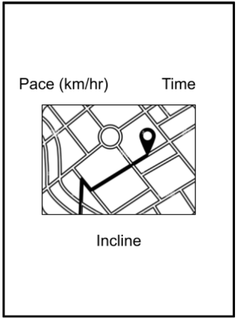
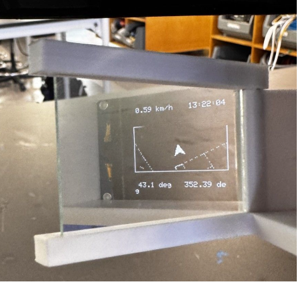
All data for a particular ride (once the user starts the ride) is stored locally to an SD card. Once the user stops the ride and decides to sync the data, it is sent to an AWS-hosted Flask based server where all previous rides can be visualized (as seen by the first image). Additionally, during the ride the user can see the following (and can be seen in the second and third images):
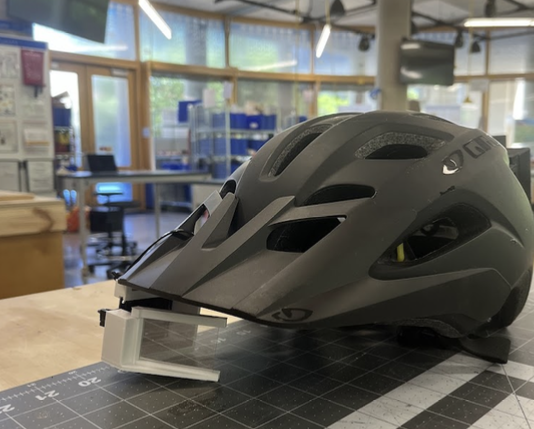
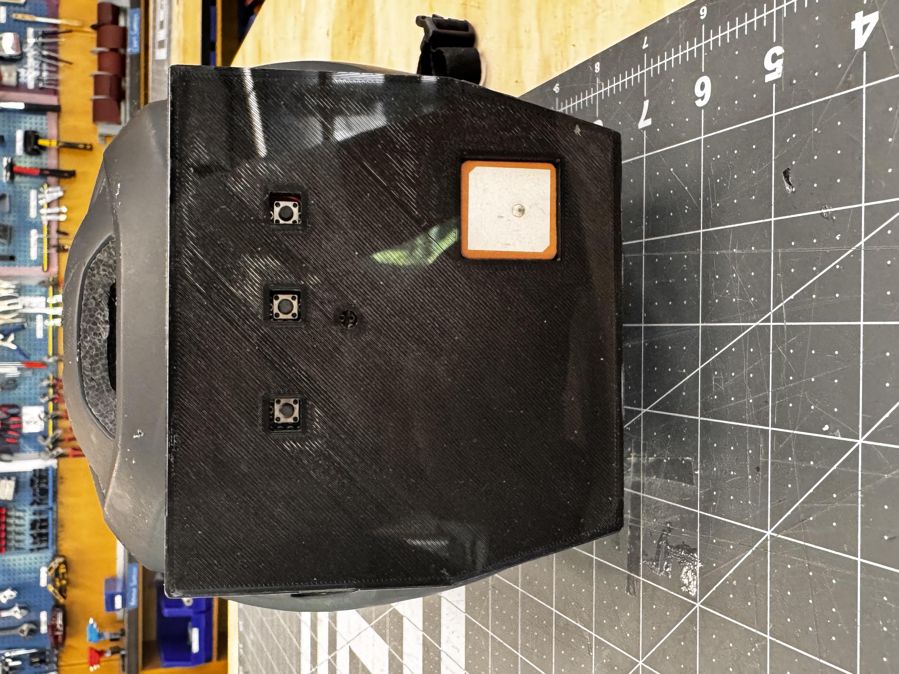
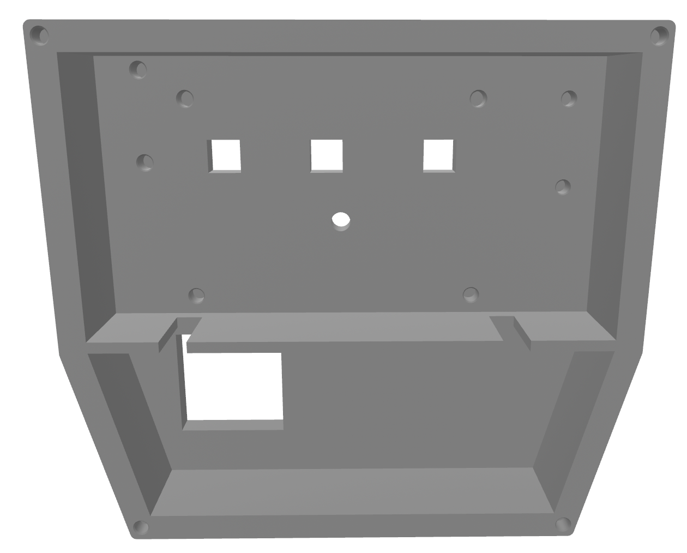
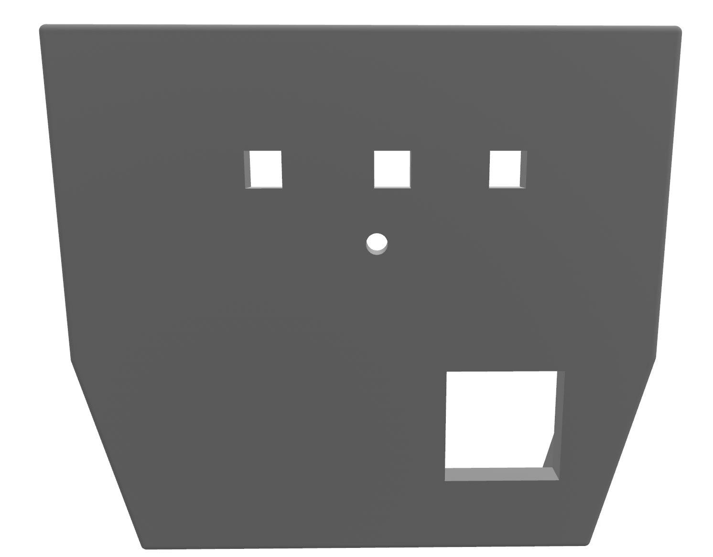
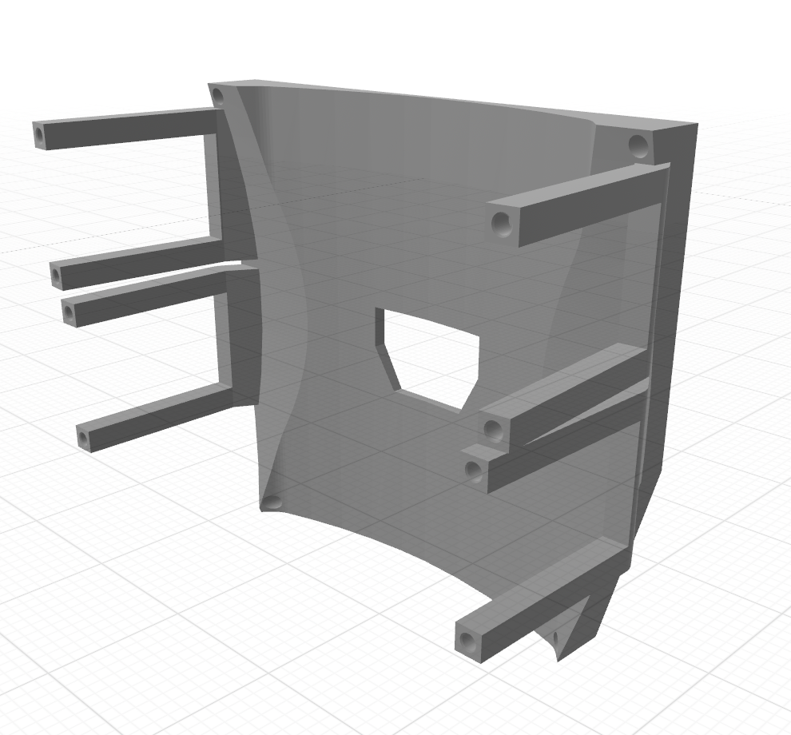
The physical design itself is quite involved to make sure the whole system fits neatly on a bike helmet while also making it easy for users to interact with. All controls electronics including the GPS, MCU, IMU, and SD card reader along with the 3 user-interactable push buttons are located in a custom-designed enclosure on the back of the helmet. The full enclosure is relatively lightweight and it's presence is not felt when wearing the helmet. The display is located at the front of the helmet with a thin, non-exposed wire running between it and the control enclosure across the inside of the helmet. The display is constructed as follows:
Project worked exactly as expected, potentially being the most 'complete' project I've made so far. It's easy to use and synced data / ride visualization has a clean appearnace.
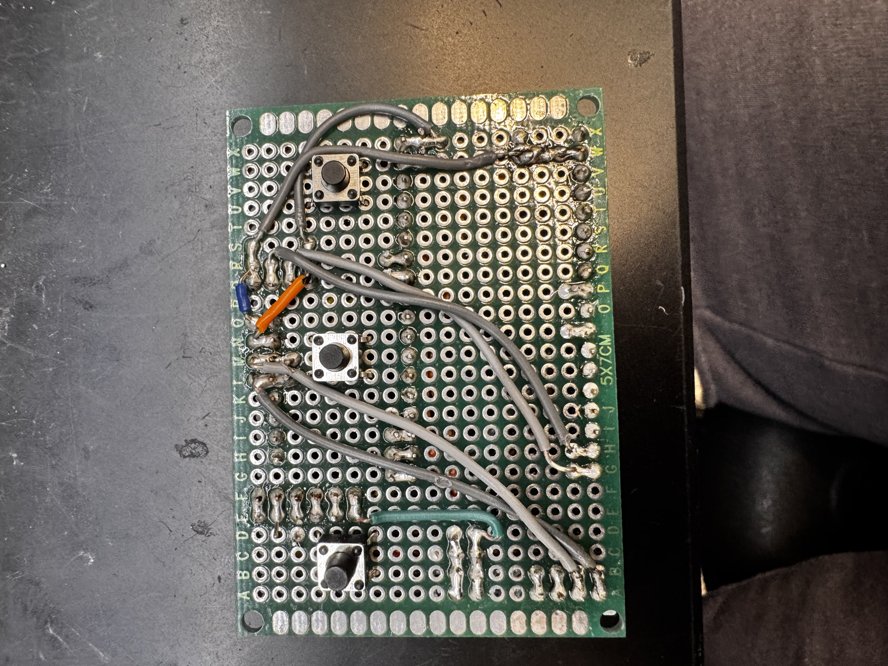
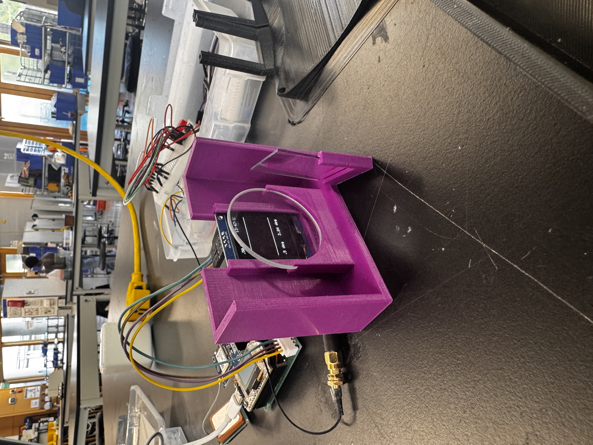
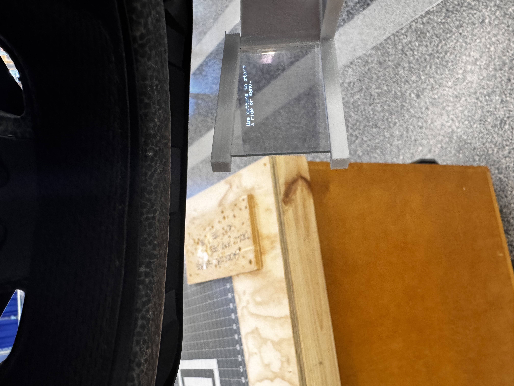
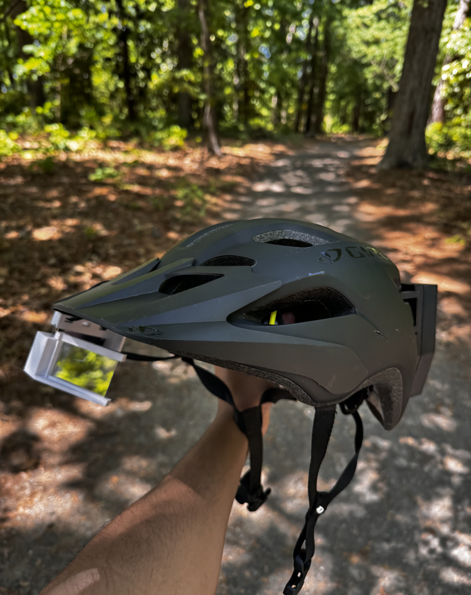
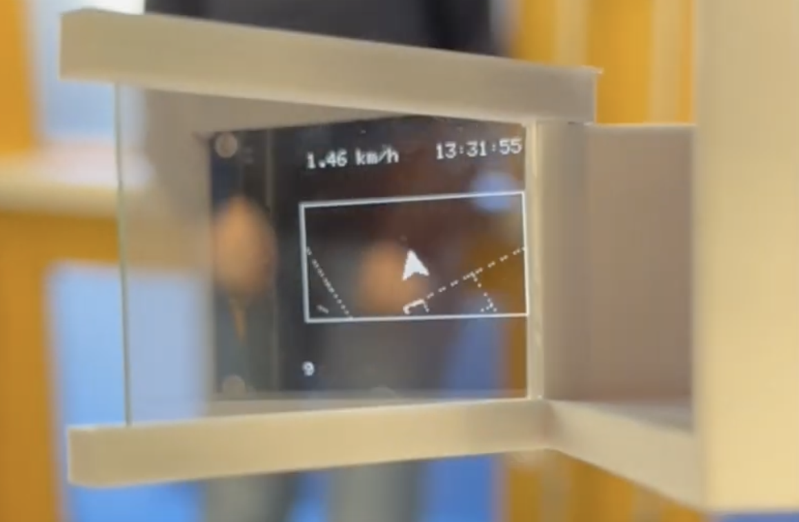